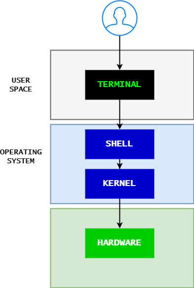

0. Introduction
Abstract
Shell - is a macro processor which allows for interactive or non-interactive command execution.
Scripting - allows for an automatic command execution that would otherwise be executed interactively one by one.
Terminals - also known as command lines, CLI or consoles, allow us to accomplish and automate tasks on a computer without the use of a graphical user interface. Using a terminal allows us to send simple text commands to our computer to do things like navigate through a directory or copy a file, and form the basis for many more complex automation and programming skills.
Types of shells:
sh- Bourne Shell: The Bourne shell is a shell command-line interpreter for computer operating systems.Bash- is a command language interpreter. It is widely available on various operating systems and is a default command interpreter on most GNU/Linux systems. The name is an acronym for the ‘Bourne-Again SHell’.ZSH, also called the Z shell, is an extended version of the Bourne Shell (sh), with plenty of new features, and support for plugins and themes. Since it’s based on the same shell as Bash, ZSH has many of the same features, and switching over is a breeze.dash- Dash stands for Debian Almquist Shell. It is a POSIX-compliant implementation of Bourne Shell. It replaces the /bin/sh in default scripts and provides better execution speed while consuming fewer resources.rbash- The Restricted Shell is a Linux Shell that restricts some of the features of the bash shell, and is very clear from the name. The restriction is well implemented for the command as well as the script running in a restricted shell. It provides an additional layer of security to bash shell in Linux.tmux- tmux is an open-source terminal multiplexer for Unix-like operating systems. It allows multiple terminal sessions to be accessed simultaneously in a single window. It is useful for running more than one command-line program at the same time.screen- With the Linux screen command, you can push running terminal applications to the background and pull them forward when you want to see them. It also supports split-screen displays and works over SSH connections, even after you disconnect and reconnect!
How to find what shells are available on the Linux machine:
linux_user@linux_machine:~/sandbox$ cat /etc/shells
/etc/shells: valid login shells
/bin/sh
/bin/bash
/usr/bin/bash
/bin/rbash
/usr/bin/rbash
/bin/dash
/usr/bin/dash
/usr/bin/tmux
/usr/bin/screen
Find out what shell is currently running echo $SHELL
What is scripting?
All scripting languages are programming languages. The scripting language is a language where instructions are written for a runtime environment. They do not require the compilation step and are rather interpreted. It brings new functions to applications and glues complex systems together. A scripting language is a programming language designed for integrating and communicating with other programming languages.
There are many scripting languages some of which are discussed below:
bash: It is a scripting language to work in the Linux interface. It is a lot easier to use bash to create scripts than other programming languages. It describes the tools to use and code in the command line and create useful reusable scripts and conserve documentation for other people to work with.
Python: It is easy, free, and open source. It supports procedure-oriented programming and object-oriented programming. Python is an interpreted language with dynamic semantics and huge lines of code that are scripted and is currently the most hyped language among developers.
JavaScript: originally a very small, highly domain-specific language, limited to running within a web browser to dynamically modify the web page being shown, that later developed into a widely portable general-purpose programming language.
Ruby: Ruby’s flexibility has allowed developers to create innovative software. It is a scripting language that is great for web development.
Perl: a text-processing language that later developed into a general-purpose language and is also used as an extension language for various applications.
The most important factor when picking a language is how familiar are the developers that will maintain the code.
When to use scripting?
only for small utilities or wrappers (a wrapper is a small script that calls other applications)
if you need performance - never use
bashorpythonlook intogoorrustif your script goes for more than 100 lines, and the complexity starts to be problematic, look into migrating that into another language.
Requirements for executing the scripts
Run a new fedora container
Create a new privileged user
# Create a fedora docker container
docker run -it fedora bash
# install utilities (for normal virtual machines we don't need to install them)
dnf install -y util-linux tree passwd vim
# Create a new user and add it to the wheel group to have sudo permissions
useradd <NAME> -G wheel
# setup a password for the user
passwd <NAME>
# Remove the password request for the sudo commands
vim /etc/sudoers
# comment
# Allows people in group wheel to run all commands
%wheel ALL=(ALL) ALL
# And uncomment
# Same thing without a password
%wheel ALL=(ALL) NOPASSWD: ALL
# switch to the newly created user
su <NAME>
# change the directory to users home
cd
# create a new sandbox
mkdir sandbox
#change the directory to the new directory
cd sandbox
# or run everything in one single command
mkdir ~/sandbox && cd ~/sandbox
Create a sandbox location to facilitate script execution.
# Update bash profile file with the location of the scripts so we can call them directly from everywhere
# Open file using vim
# .bashrc and .bash_profile are 2 files that host all our custom settings for the bash shell
vim ~/.bashrc
# add at the end of the file the line and save
export PATH="$PATH:/home/${USER}/sandbox"
# sourcing means that you run a file to get some variables out of it
source ~/.bashrc
1. Making your first script
Create a script
Make the script executable
Edit content (we are using filenames that are easy to find on the keyboard.)
# Create script
touch qqqHelloWorld1
# add executable permission
chmod u+x qqqHelloWorld1
# Edit content
vim qqqHelloWorld1
Add inside the file and then save
# !/usr/bin/env bash
echo "Hell on World"
Run the script using the command
bash qqqHelloWorld1
# or
./qqqHelloWorld1
# or if the script location is in PATH
qqqHelloWorld1
INPUT and OUTPUT
read
touch aaaInput1 && chmod u+x aaaInput1 && vim aaaInput1
# !/usr/bin/env bash
read name
echo "Hello, $name"
Run using
touch aaaInput2 && chmod u+x aaaInput2 && vim aaaInput2
# !/usr/bin/env bash
read -p "Enter your name: " name
echo "Hello, $name"
touch aaaInput3 && chmod u+x aaaInput3 && vim aaaInput3
# !/usr/bin/env bash
echo "Hello, ${1}"
touch aaaInput4 && chmod u+x aaaInput4 && vim aaaInput4
# !/usr/bin/env bash
echo "Total arguments: $#"
echo "Script Name = $0"
echo "First Argument = $1"
echo "Second Argument = $2"
DATA STRUCTURES
<variable_name>=<value>
Notice that there are no spaces before and after the equal (=) operator; otherwise, you’ll get an error. Why? Because the shell will interpret the variable_name as a command, not a variable.
Variable
PATH_TO_FILES='/some/path'Constants
readonly PATH_TO_FILES='/some/path'Lists/Arrays
# !/usr/bin/env bash
declare -a projects
# Instantiate the array with values
projects=("introduction" \
"environments" \\
"linux" \\
"scripts" )
IF CONDITIONS
if [[ condition ]]; then
elif
[COMMANDS]
else
[COMMANDS]
fi
Example
touch sssCondition && chmod u+x sssCondition && vim sssCondition
# !/usr/bin/env bash
if [[ ${1} -ge 10 ]]; then
echo "Number is greater than 10"
else
echo "Number is lower than 10"
fi
LOOPS
FOR LOOP
# !/usr/bin/env bash
for item in [LIST]; do
[COMMANDS]
done
Example:
touch dddFor1 && chmod u+x dddFor1 && vim dddFor1
# !/usr/bin/env bash
for i in {1..10}; do
echo "Print ${i}"
done
touch dddFor2 && chmod u+x dddFor2 && vim dddFor2
# !/usr/bin/env bash
for i in /var/*; do
echo $i
done
WHILE LOOP
# !/usr/bin/env bash
while [ condition ]; do
[COMMANDS]
done
Example
touch zzzWhile && chmod u+x zzzWhile && vim zzzWhile
# !/usr/bin/env bash
num=1
while [ $num -le 10 ]; do
echo $(($num * 7))
num=$(($num+1))
done
UNTIL LOOP
until [ condition ]; do
[COMMANDS]
Done
Example:
touch xxxUntil && chmod u+x xxxUntil && vim xxxUntil
# !/usr/bin/env bash
num=1
until [ $num -gt 10 ]; do
echo $(($num * 7))
num=$(($num+1))
done
Warning
Don’t forget about -le vs -lt and -ge vs gt
2. Create a loading spinner
find out how to use arrays
learn to create scripts that run continuously
touch cccSpinner && chmod u+x cccSpinner && vim cccSpinner
# !/usr/bin/env bash
# declare array
array=('-' '\' '|' '/')
# loop until stopped
while true; do
# for every element in the array
for c in "${array[@]}"; do
# man echo
# \-n do not output the trailing newline
# \-e enable interpretation of backslash escapes
echo \-en "\\r $c "
# wait for half a second
sleep .5
# close for
done
# close while
done
Run the script cccSpinner
2. Creating a backup of your home
How to create a backup?
Creating an archive from a directory, adding also the date in the name.
tar --help
man tar
date
The script name will be qqqBackUp1
Creating, adding permission and opening the file
touch qqqBackUp1 && chmod u+x qqqBackUp1 && vim qqqBackUp1
# !/usr/bin/env bash
tar -czf /tmp/home*backup`date +"%Y*%m_%d"` ~/sandbox